Review each canonical definition beside its generated semantic SVG. Blue marks ocean, green marks grassland, gray marks mountain; roads are split into ordinary roads and bridges. Source art is shown only when a locally approved copy is available.
| Tile | Definition | SVG |
|---|---|---|
| Starting Castlestart_castle | Edges: N pasture · E pasture · S pasture · W pasture | Roads: NESW | Regions: pasture:NESW | Icons: castle×1 | |
| Landscape 01turmplattchen-0-0-0-1-0-0 | Edges: N pasture · E pasture · S mountain · W mountain | Roads: ES | Regions: pasture:NE; mountain:SW | Icons: broch×1, sheep×1 | 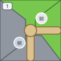 |
| Landscape 02turmplattchen-0-0-1-1-1-0 | Edges: N pasture · E mountain · S water · W mountain | Roads: N | Regions: pasture:N; mountain:EW; water:S | Icons: broch×1, scroll×1 (per_2_whisky_tiles) | 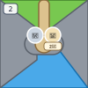 |
| Landscape 03turmplattchen-0-0-2-1-1-0 | Edges: N water · E mountain · S mountain · W water | Roads: E | Regions: water:NW; mountain:ES | Icons: broch×1, whisky×1 | 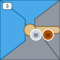 |
| Landscape 04turmplattchen-0-0-3-1-0-0 | Edges: N pasture · E mountain · S mountain · W pasture | Roads: ES | Regions: pasture:NW; mountain:ES | Icons: farm×1, sheep×1, broch×1 | 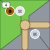 |
| Landscape 05turmplattchen-0-1-0-1-0-1 | Edges: N pasture · E mountain · S mountain · W mountain | Roads: NE | Regions: pasture:N; mountain:ESW | Icons: broch×1, whisky×1 | 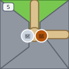 |
| Landscape 06turmplattchen-0-1-1-0 | Edges: N water · E mountain · S mountain · W mountain | Roads: ES | Regions: water:N; mountain:ESW | Icons: broch×1, whisky×1 | 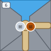 |
| Landscape 07turmplattchen-0-1-1-1-0-1 | Edges: N water · E water · S water · W pasture | Roads: W | Regions: water:NES; pasture:W; mountain:internal | Icons: broch×1, whisky×1 | 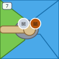 |
| Landscape 08turmplattchen-0-1-2-1 | Edges: N pasture · E mountain · S mountain · W mountain | Roads: NW | Regions: pasture:N; mountain:ESW | Icons: broch×1 | 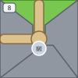 |
| Landscape 09turmplattchen-0-1-3-0 | Edges: N pasture · E mountain · S mountain · W mountain | Roads: NS | Regions: pasture:N; mountain:ESW; water:internal | Icons: broch×1 | 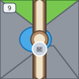 |
| Landscape 10turmle1 | Edges: N water · E pasture · S mountain · W mountain | Roads: ES | Regions: water:N; pasture:E; mountain:SW | Icons: broch×1 | 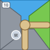 |
| Landscape 11turmle2 | Edges: N pasture · E water · S pasture · W water | Roads: none | Regions: pasture:N; water:E; pasture:S; water:W; mountain:internal | Icons: broch×1, lighthouse×1 | |
| Landscape 12restplattchen1-1-0-1-0 | Edges: N pasture · E mountain · S pasture · W mountain | Roads: ESW | Regions: pasture:NS; mountain:E; mountain:W | Icons: farm×1, whisky×1 | 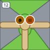 |
| Landscape 13restplattchen1-1-1-0-1 | Edges: N pasture · E mountain · S mountain · W pasture | Roads: ES | Regions: pasture:NW; mountain:ES | Icons: scroll×1 (per_farm), whisky×1 | 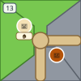 |
| Landscape 14restplattchen1-1-2-0-1 | Edges: N pasture · E water · S water · W water | Roads: N | Regions: pasture:N; water:ESW | Icons: cattle×1, farm×1, whisky×1 | 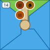 |
| Landscape 15restplattchen1-1-3-0-1 | Edges: N mountain · E mountain · S mountain · W water | Roads: NE | Regions: mountain:NES; water:W; pasture:internal | Icons: farm×1, whisky×1 | 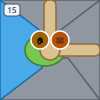 |
| Landscape 16restplattchen1-1-4-0-1 | Edges: N water · E pasture · S water · W mountain | Roads: none | Regions: water:N; pasture:E; water:S; mountain:W | Icons: sheep×3 | 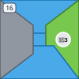 |
| Landscape 17restplattchen1-1-4-0-2-0-1 | Edges: N water · E pasture · S pasture · W water | Roads: none | Regions: water:NW; pasture:ES | Icons: scroll×1 (per_farm), sheep×1 | 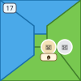 |
| Landscape 18restplattchen1-2-0 | Edges: N pasture · E mountain · S mountain · W mountain | Roads: NESW | Regions: pasture:N; mountain:ESW | Icons: farm×1, whisky×1 | 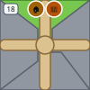 |
| Landscape 19restplattchen1-2-1-0-1 | Edges: N pasture · E mountain · S pasture · W pasture | Roads: NSW | Regions: pasture:NSW; mountain:E | Icons: sheep×2, whisky×1 | 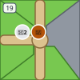 |
| Landscape 20restplattchen1-2-2 | Edges: N pasture · E mountain · S pasture · W mountain | Roads: NSW | Regions: pasture:NS; mountain:E; mountain:W | Icons: broch×1, whisky×1 | 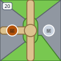 |
| Landscape 21restplattchen1-2-3-0-1 | Edges: N pasture · E pasture · S mountain · W mountain | Roads: ES | Regions: pasture:NE; mountain:SW | Icons: sheep×1, whisky×1 | 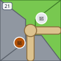 |
| Landscape 22restplattchen1-2-4-0-1 | Edges: N mountain · E water · S pasture · W pasture | Roads: SW | Regions: mountain:N; water:E; pasture:SW | Icons: farm×1, sheep×1 | 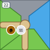 |
| Landscape 23restplattchen1-2-4-0-2-0-1 | Edges: N mountain · E water · S mountain · W mountain | Roads: SW | Regions: mountain:NSW; water:E | Icons: scroll×1 (per_2_whisky_tiles) | 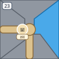 |
| Landscape 24restplattchen1-3-0 | Edges: N pasture · E water · S pasture · W water | Roads: NS | Regions: pasture:NS; water:E; water:W | Icons: scroll×1 (per_cattle), whisky×1 | 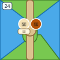 |
| Landscape 25restplattchen1-3-1-0-1 | Edges: N pasture · E pasture · S pasture · W mountain | Roads: NSW | Regions: pasture:NES; mountain:W | Icons: cattle×1, sheep×1, whisky×1 | 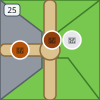 |
| Landscape 26restplattchen1-3-2-0-1 | Edges: N water · E mountain · S mountain · W pasture | Roads: ESW | Regions: water:N; mountain:ES; pasture:W | Icons: whisky×1 | 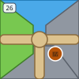 |
| Landscape 27restplattchen1-3-3 | Edges: N water · E pasture · S mountain · W mountain | Roads: SW | Regions: water:N; pasture:E; mountain:SW | Icons: sheep×3 | 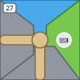 |
| Landscape 28restplattchen1-3-4-0-0-1-0 | Edges: N water · E water · S mountain · W pasture | Roads: SW | Regions: water:NE; mountain:S; pasture:W | Icons: scroll×1 (per_broch) | 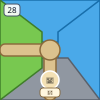 |
| Landscape 29restplattchen1-3-4-0-1-0-0 | Edges: N pasture · E water · S pasture · W pasture | Roads: NW | Regions: pasture:NSW; water:E | Icons: sheep×1, cattle×1, farm×1 | 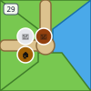 |
| Landscape 30restplattchen1-4-0 | Edges: N pasture · E mountain · S pasture · W pasture | Roads: ESW | Regions: pasture:NSW; mountain:E | Icons: farm×1, whisky×1 | 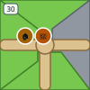 |
| Landscape 31restplattchen1-4-1 | Edges: N pasture · E water · S pasture · W water | Roads: NS | Regions: pasture:NS; water:E; water:W | Icons: cattle×1, whisky×1 | 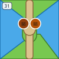 |
| Landscape 32restplattchen1-4-2-0-0 | Edges: N pasture · E pasture · S pasture · W mountain | Roads: NSW | Regions: pasture:NES; mountain:W | Icons: cattle×2, sheep×1, whisky×1 | 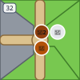 |
| Landscape 33restplattchen1-4-3-0-0 | Edges: N mountain · E pasture · S pasture · W pasture | Roads: NESW | Regions: mountain:N; pasture:ESW | Icons: sheep×2 | 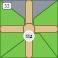 |
| Landscape 34restplattchen1-4-4-0-0-1-0 | Edges: N mountain · E pasture · S pasture · W water | Roads: NE | Regions: mountain:N; pasture:ES; water:W | Icons: farm×1, scroll×1 (per_2_sheep) | 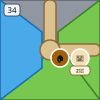 |
| Landscape 35restplattchen1-4-4-0-1-0-0 | Edges: N mountain · E pasture · S pasture · W mountain | Roads: EW | Regions: mountain:NW; pasture:ES; water:internal | Icons: farm×1 | 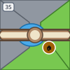 |
| Landscape 36restplattchen2-0-0 | Edges: N mountain · E pasture · S pasture · W pasture | Roads: NESW | Regions: mountain:N; pasture:ESW | Icons: scroll×1 (per_cattle) | 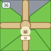 |
| Landscape 37restplattchen2-1-0 | Edges: N water · E pasture · S mountain · W pasture | Roads: ES | Regions: water:N; pasture:EW; mountain:S | Icons: cattle×1, scroll×1 (per_2_sheep) | 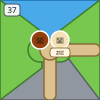 |
| Landscape 38restplattchen2-2-0 | Edges: N mountain · E pasture · S pasture · W water | Roads: NE | Regions: mountain:N; pasture:ES; water:W | Icons: farm×1, sheep×1, cattle×1 | 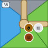 |
| Landscape 39leuchtturmplattchen-0-0 | Edges: N water · E mountain · S mountain · W pasture | Roads: E | Regions: water:N; mountain:ES; pasture:W | Icons: lighthouse×1 | 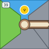 |
| Landscape 40leuchtturmplattchen-0-1-0-0 | Edges: N water · E water · S mountain · W water | Roads: none | Regions: water:NEW; mountain:S; pasture:internal | Icons: lighthouse×1, sheep×1, cattle×1 | 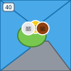 |
| Landscape 41leuchtturmplattchen-0-2 | Edges: N pasture · E water · S pasture · W water | Roads: none | Regions: pasture:N; water:EW; pasture:S | Icons: lighthouse×1 | 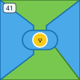 |
| Landscape 42leuchtturmplattchen-0-3 | Edges: N mountain · E water · S mountain · W water | Roads: N | Regions: mountain:N; water:E; mountain:S; water:W; pasture:internal | Icons: lighthouse×1, cattle×1, whisky×1 | 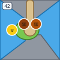 |
| Landscape 43leuchtturmplattchen-1-0 | Edges: N mountain · E pasture · S pasture · W water | Roads: NES | Regions: mountain:N; pasture:ES; water:W | Icons: lighthouse×1, farm×1, whisky×1 | 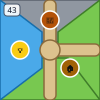 |
| Landscape 44leuchtturmplattchen-1-1 | Edges: N water · E water · S pasture · W water | Roads: none | Regions: water:NEW; pasture:S | Icons: lighthouse×1, scroll×1 (per_2_ships) | 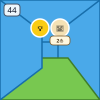 |
| Landscape 45leuchtturmplattchen-1-2 | Edges: N pasture · E pasture · S pasture · W water | Roads: ES | Regions: pasture:NES; water:W; mountain:internal | Icons: lighthouse×1, cattle×1, whisky×1 | 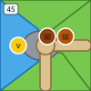 |
| Landscape 46leuchtturmplattchen-2-0 | Edges: N mountain · E pasture · S pasture · W water | Roads: NE | Regions: mountain:N; pasture:ES; water:W | Icons: lighthouse×1, sheep×1 | 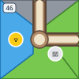 |
| Landscape 47leuchtturmplattchen-2-1-0-0 | Edges: N pasture · E water · S water · W pasture | Roads: none | Regions: pasture:NW; water:ES | Icons: lighthouse×1, sheep×1, scroll×1 (per_2_ships) | 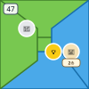 |
| Landscape 48leuchtturmplattchen-2-2-0-0 | Edges: N water · E water · S pasture · W pasture | Roads: none | Regions: water:NE; pasture:SW | Icons: lighthouse×1, sheep×1 | 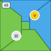 |
| Landscape 49leuchtturmplattchen-3-0 | Edges: N water · E water · S mountain · W water | Roads: none | Regions: water:NEW; mountain:S | Icons: lighthouse×1 | 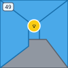 |
| Landscape 50leuchtturmplattchen-3-1 | Edges: N mountain · E pasture · S mountain · W water | Roads: NS | Regions: mountain:NS; pasture:E; water:W | Icons: lighthouse×1, whisky×1 | 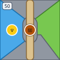 |
| Landscape 51leuchtturmplattchen-3-2-1-1 | Edges: N pasture · E water · S pasture · W mountain | Roads: NSW | Regions: pasture:NS; water:E; mountain:W | Icons: lighthouse×1, broch×1, whisky×1 | 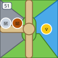 |
| Landscape 52schiffsplattchen-0-0 | Edges: N water · E mountain · S mountain · W water | Roads: E | Regions: water:NW; mountain:ES | Icons: ship×1, scroll×1 (per_broch) | |
| Landscape 53schiffsplattchen-0-1-0-0 | Edges: N pasture · E water · S water · W water | Roads: N | Regions: pasture:N; water:ESW | Icons: ship×2, whisky×1 | |
| Landscape 54schiffsplattchen-0-2 | Edges: N water · E water · S pasture · W mountain | Roads: SW | Regions: water:NE; pasture:S; mountain:W | Icons: ship×1, farm×1, cattle×1 | |
| Landscape 55schiffsplattchen-0-3 | Edges: N water · E pasture · S mountain · W water | Roads: ES | Regions: water:NW; pasture:E; mountain:S | Icons: ship×2, whisky×1 | |
| Landscape 56schiffsplattchen-0-4 | Edges: N mountain · E water · S water · W pasture | Roads: none | Regions: mountain:N; water:ES; pasture:W | Icons: ship×1, cattle×1 | |
| Landscape 57schiffsplattchen-0-5-0-0 | Edges: N pasture · E mountain · S pasture · W pasture | Roads: none | Regions: pasture:NSW; mountain:E; water:internal | Icons: ship×1, cattle×1, sheep×1 | |
| Landscape 58schiffsplattchen-1-0-0-0 | Edges: N pasture · E water · S pasture · W mountain | Roads: NW | Regions: pasture:N; water:E; pasture:S; mountain:W | Icons: ship×2, sheep×1 | |
| Landscape 59schiffsplattchen-1-1-0-0 | Edges: N water · E water · S mountain · W pasture | Roads: SW | Regions: water:NE; mountain:S; pasture:W | Icons: ship×1, farm×1, sheep×1 | |
| Landscape 60schiffsplattchen-1-2-0-0 | Edges: N mountain · E water · S mountain · W water | Roads: none | Regions: mountain:N; water:EW; mountain:S | Icons: ship×2 | |
| Landscape 61schiffsplattchen-1-3 | Edges: N water · E mountain · S mountain · W water | Roads: E | Regions: water:NW; mountain:ES | Icons: ship×1, lighthouse×1 | |
| Landscape 62schiffsplattchen-1-4-0-0 | Edges: N pasture · E pasture · S water · W water | Roads: E | Regions: pasture:NE; water:SW | Icons: ship×1, cattle×1, whisky×1 | |
| Landscape 63schiffsplattchen-1-5-0-0 | Edges: N water · E water · S pasture · W pasture | Roads: none | Regions: water:NE; pasture:SW | Icons: ship×1, scroll×1 (per_lighthouse) | |
| Landscape 64schiffsplattchen-2-0 | Edges: N pasture · E pasture · S pasture · W mountain | Roads: NE | Regions: pasture:NES; mountain:W; water:internal | Icons: ship×1, farm×1 | |
| Landscape 65schiffsplattchen-2-1-0-0 | Edges: N water · E water · S water · W pasture | Roads: none | Regions: water:NES; pasture:W; mountain:internal | Icons: ship×1, broch×1 | |
| Landscape 66schiffsplattchen-2-2 | Edges: N water · E water · S water · W mountain | Roads: none | Regions: water:NES; mountain:W | Icons: ship×2 | |
| Landscape 67schiffsplattchen-2-3 | Edges: N water · E mountain · S water · W mountain | Roads: EW | Regions: water:N; mountain:EW; water:S | Icons: ship×1, ship×1 | |
| Landscape 68schiffsplattchen-2-4-1-1 | Edges: N pasture · E mountain · S pasture · W mountain | Roads: NW | Regions: pasture:N; mountain:E; pasture:S; mountain:W; water:internal | Icons: ship×1 | |
| Landscape 69schiffsplattchen-3-0 | Edges: N water · E water · S water · W pasture | Roads: none | Regions: water:NES; pasture:W | Icons: ship×1 | |
| Landscape 70schiffsplattchen-3-1-0-0 | Edges: N water · E pasture · S mountain · W water | Roads: ES | Regions: water:NW; pasture:E; mountain:S | Icons: ship×1, whisky×1 | |
| Landscape 71schiffsplattchen-3-2 | Edges: N pasture · E mountain · S pasture · W water | Roads: NS | Regions: pasture:NS; mountain:E; water:W | Icons: ship×1 | |
| Landscape 72schiffsplattchen-3-3 | Edges: N water · E pasture · S pasture · W water | Roads: ES | Regions: water:NW; pasture:ES | Icons: ship×1, scroll×1 (per_lighthouse) | |
| Landscape 73schiffsplattchen-3-4-1-0 | Edges: N mountain · E water · S water · W water | Roads: none | Regions: mountain:N; water:ESW; pasture:internal | Icons: ship×1, sheep×2 |